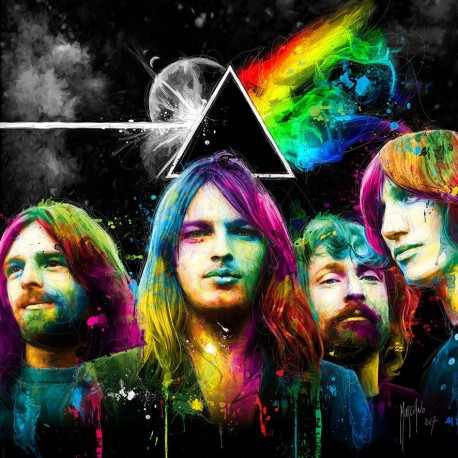

My Favorites
| Pink Floyd | Grateful Dead | Talking Heads |
|---|---|---|
|  |  |
 |
Some of their best albums are The Wall, Dark Side of the Moon, and Wish You Were Here. |
Some of their best albums are American Beauty, Europe '72, and Blues for Allah |
Some of their best albums are
|